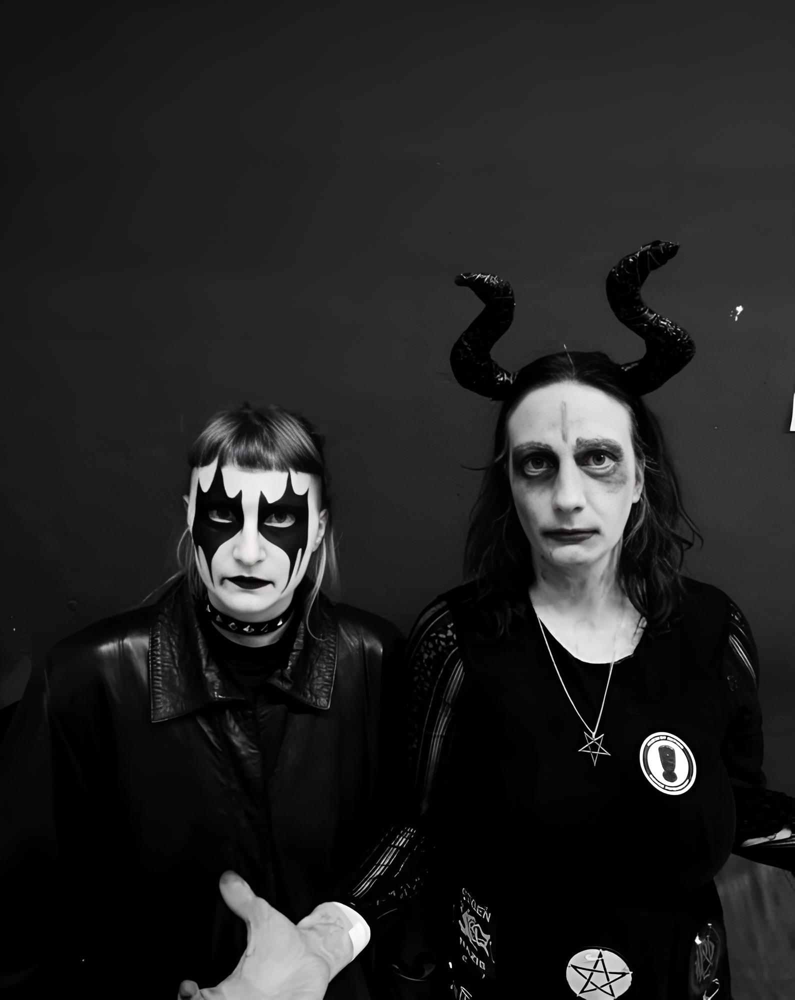

Scheidenkleister ist ein im Schatten des Grazer Schlossbergs gegründetes Musikprojekt, das seit 2017 Feminist Black Metal auskotzt und die Ruinen des Patriarchats in Brand setzt. Hinter dem radikal-emanzipatorischen Kollektiv stehen Vulvarca (u. a. Satansgeige, Gebrüll) und Clitorax (u. a. Todesorgel) – zwei Ikoninnen ihres Genres. Mit gnadenlosen Organ Blast Beats, Corpse Paint und abgründigen Klanglandschaften zertrümmern sie misogyne Machtstrukturen. Scheidenkleister glaubt nicht an Erlösung, sondern nur an Zerstörung als Akt der Befreiung unter der Vorherrschaft von Satana. Verbeugt euch!